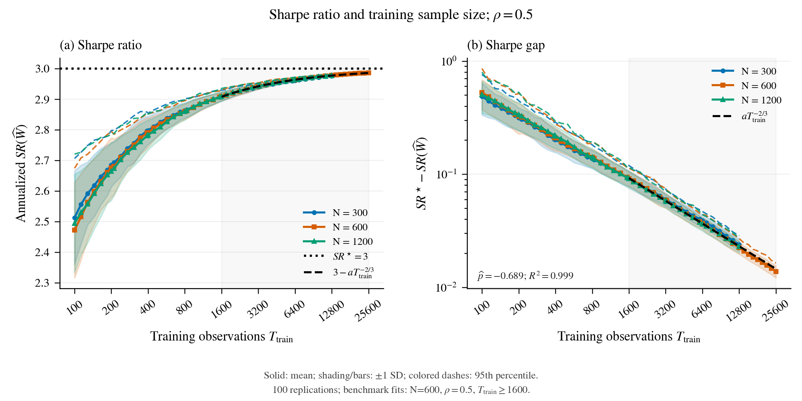
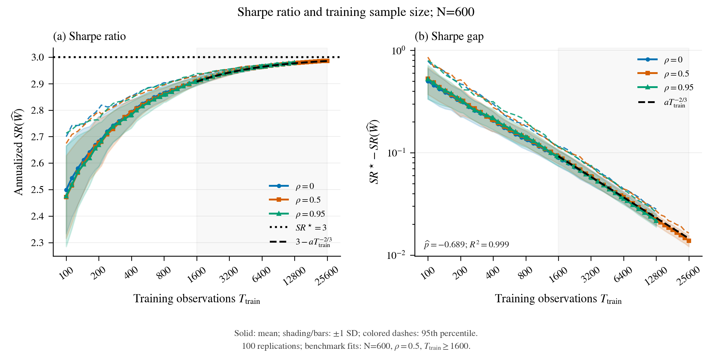
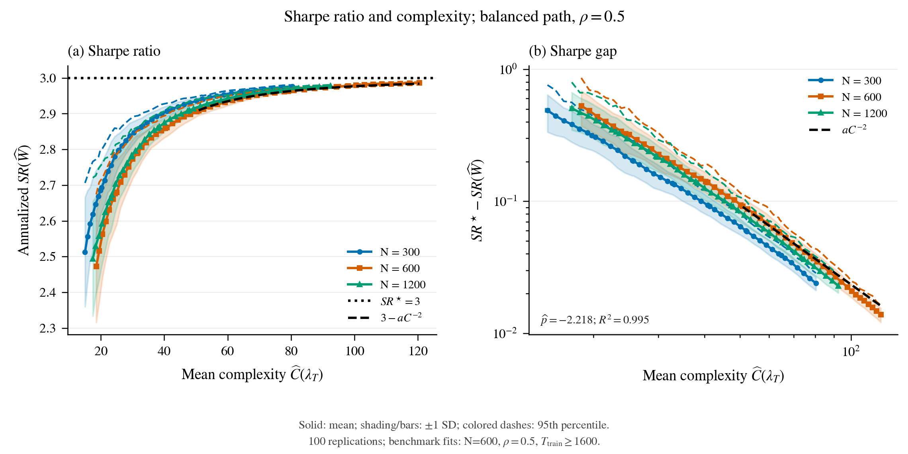
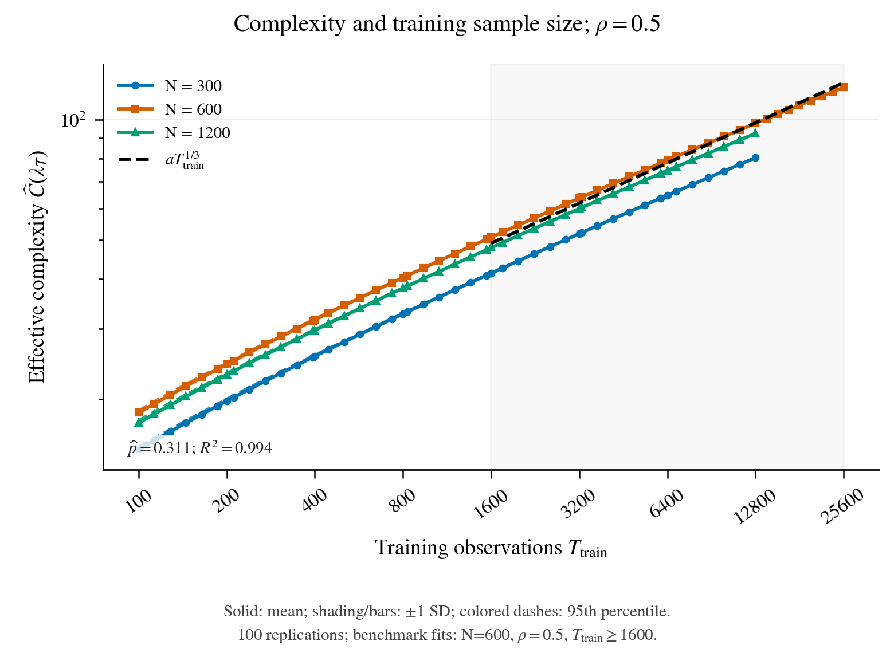
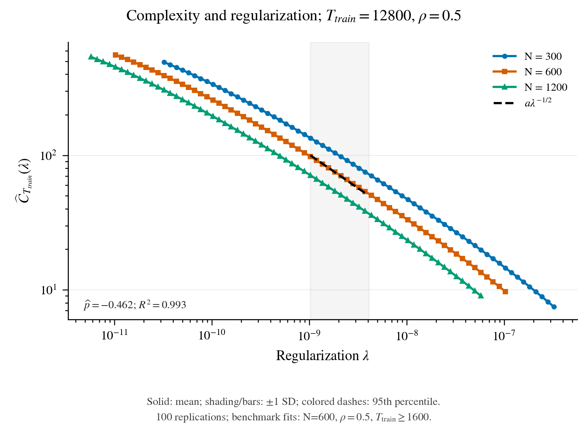
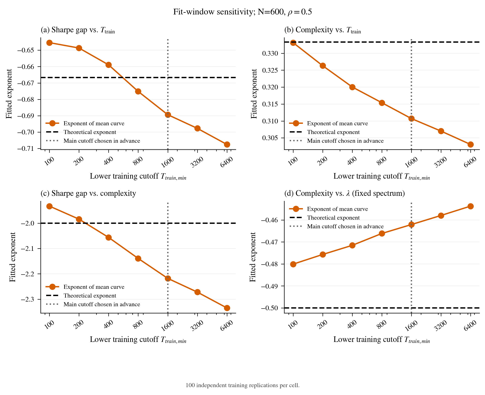
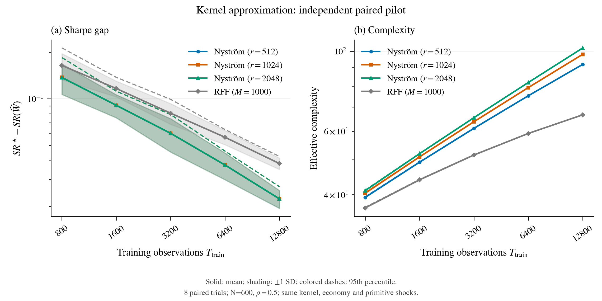
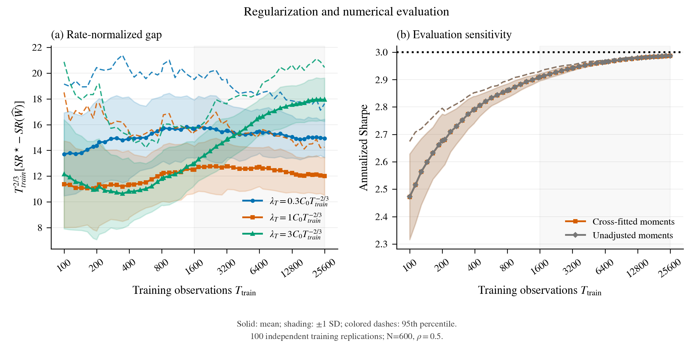

Economia originale invariata: D=s=3, b=2, Sharpe ottimo annualizzato 3, stessa calibrazione e distribuzione degli shock. 100 repliche indipendenti per ciascuna delle cinque celle. Tutte le ascisse temporali indicano esclusivamente T_train. Le bande e le barre sono media +/- una deviazione standard campionaria (ddof=1). I tratteggi colorati mostrano il 95esimo percentile empirico tra repliche, calcolato separatamente per ogni punto e metrica con interpolazione lineare: non sono SE o intervalli di confidenza della media. Nel grafico Sharpe-complexity il percentile dello Sharpe e posto alla complexity media dello stesso T; non e un quantile congiunto delle due coordinate.
I PDF sono vettoriali, con font serif incorporati e palette Okabe-Ito. Per mantenere leggibile la griglia fitta nel grafico Sharpe-complexity, la STD verticale e mostrata come banda su tutti i punti e la STD orizzontale come barra alle ancore temporali originarie; i valori di tutte le STD restano in summary.csv.
Griglia completa di 46 valori effettivi fino a 12800 date di training; riferimento N=600, rho=0.5 con 54 valori fino a 25600. Ogni punto e stimato nuovamente, senza interpolare simulazioni. Il pilot usa separatamente 800 date di training e 1600 di validazione: non vengono aggiunte all'asse X della conferma. Il fit principale usa T_train >= 1600, fissato prima di osservare la nuova simulazione. Sono pubblicati tutti i tagli di sensibilita [100, 200, 400, 800, 1600, 3200, 6400], compreso 200 aggiunto su richiesta dopo il pilot preliminare. Per C(lambda) il taglio identifica l'intervallo di lambda corrispondente al percorso bilanciato, sullo stesso spettro a T_train fissato.
PDF completo; repliche integrali; sensibilita ai tagli iniziali.
| graph | expected_exponent | exponent | exponent_ci95 | r_squared | floor | floor_r_squared |
|---|---|---|---|---|---|---|
| Sharpe gap vs T, different N | -0.66667 | -0.68938 | [-0.7041615549135215, -0.6748274469610254] | 0.99936 | 0.00000 | 0.99936 |
| Sharpe gap vs T, different rho | -0.66667 | -0.68938 | [-0.7041615549135215, -0.6748274469610254] | 0.99936 | 0.00000 | 0.99936 |
| Sharpe gap vs complexity | -2.00000 | -2.21791 | [-2.2656698841318454, -2.171086620453963] | 0.99513 | 0.00000 | 0.99513 |
| C vs T | 0.33333 | 0.31071 | [0.3106105797569395, 0.3108052266960448] | 0.99417 | 5.85217 | 0.99953 |
| C vs lambda | -0.50000 | -0.46208 | [-0.4621130039220967, -0.46205492341009097] | 0.99311 | 5.71116 | 0.99979 |
Benchmark: gap(T_train) = O_P(T_train^(-2/3)), C(T_train) ~ T_train^(1/3), C(lambda) ~ lambda^(-1/2). Il gap(C) ~ C^(-2) si riferisce al percorso bilanciato. R2 descrive l'adattamento finito; non dimostra un minimax o un'equivalenza asintotica per una singola economia. Gli intervalli bootstrap degli esponenti sono conservati nei CSV, mentre le bande delle performance mostrano SD tra repliche. I fit con floor restano diagnostici nei JSON; non vengono usati per dichiarare recupero del rate verso il vero Sharpe 3.
Nyström non modifica il kernel Matérn-3/2: phi(z)=K(z,C)L^(-T), con LL'=K(C,C)+10^(-12)I. I centri Sobol sono fissi, annidati e indipendenti dai dati. Il confronto numerico indipendente sceglie il rango 1024 rispetto al riferimento 2048. La scelta usa esclusivamente tolleranze dichiarate sugli errori di complexity e Sharpe, senza usare pendenze o R2. Tutti gli esiti, inclusi RFF1000 e ranghi che falliscono, sono in fidelity_trials.csv e rank_selection.json. Come riferimento metodologico: Rudi, Camoriano e Rosasco (2015), Less is More: Nystrom Computational Regularization. Quel lavoro riguarda regressione kernel; non costituisce da solo una verifica delle ipotesi finanziarie o di mixing di questa simulazione.
Il pilot principale termina a 12800. L'audit separato tail_audit.json estende 2 stream del pilot fino a 25600 e confronta rango selezionato e riferimento. Tutti gli esiti sono riportati, anche quando lo scostamento supera una tolleranza del pilot. Questo confronto misura errore di rappresentazione: non e un intervallo di confidenza delle performance e non contribuisce a medie, STD, percentili o fit delle 100 repliche.
| lambda_multiplier | T_train | selected_rank | reference_rank | selected_C | reference_C | relative_C_difference | absolute_SR_difference | meets_original_value_tolerances |
|---|---|---|---|---|---|---|---|---|
| 0.3000000 | 25600 | 1024 | 2048 | 201.0853050 | 218.6951449 | 0.0805223 | 0.0003238 | False |
| 1.0000000 | 25600 | 1024 | 2048 | 120.5689330 | 126.7436441 | 0.0487181 | 0.0000122 | True |
| 3.0000000 | 25600 | 1024 | 2048 | 73.4135784 | 75.6659033 | 0.0297667 | 0.0000808 | True |
Si integrano analiticamente gli shock e si usano 8192 stati indipendenti dal training, divisi in due meta indipendenti. E noto p*=3/7. Per ogni meta f, m_f e s_f stimano primo e secondo momento del payoff, p_f quello dell'oracolo. La correzione e m_f-c_(-f)(p_f-p*), s_f-c_(-f)^2(p_f-p*), con c_(-f)=m_(-f)/p_(-f) scelto sull'altra meta. L'indipendenza delle meta preserva l'assenza di bias dei momenti corretti; il rapporto di Sharpe resta una stima numerica non lineare. Il training non usa l'oracolo. SR_raw e i momenti corretti sono salvati per ciascuna policy: nessun gap e tagliato a zero. La figura di sensibilita confronta gli stessi portafogli con e senza correzione.
| N | rho | metric | T_train_min | T_train_max | points | expected_exponent | exponent | exponent_ci_low | exponent_ci_high | r_squared | floor | floor_r_squared |
|---|---|---|---|---|---|---|---|---|---|---|---|---|
| 300 | 0.50000 | SR_T | 100 | 12800.00000 | 46 | -0.66667 | -0.60587 | -0.61847 | -0.59328 | 0.99434 | 0.01278 | 0.99893 |
| 300 | 0.50000 | C_T | 100 | 12800.00000 | 46 | 0.33333 | 0.34267 | 0.34230 | 0.34302 | 0.99914 | 0.00000 | 0.99914 |
| 300 | 0.50000 | SR_C | 100 | 12800.00000 | 46 | -2.00000 | -1.76523 | -1.80223 | -1.72776 | 0.97605 | 0.02292 | 0.99200 |
| 300 | 0.50000 | SR_T | 200 | 12800.00000 | 40 | -0.66667 | -0.60595 | -0.61917 | -0.59215 | 0.99249 | 0.01056 | 0.99856 |
| 300 | 0.50000 | C_T | 200 | 12800.00000 | 40 | 0.33333 | 0.33547 | 0.33517 | 0.33577 | 0.99931 | 0.34279 | 0.99936 |
| 300 | 0.50000 | SR_C | 200 | 12800.00000 | 40 | -2.00000 | -1.80417 | -1.84340 | -1.76280 | 0.98399 | 0.01435 | 0.99570 |
| 300 | 0.50000 | SR_T | 400 | 12800.00000 | 33 | -0.66667 | -0.60810 | -0.62276 | -0.59314 | 0.98649 | 0.00928 | 0.99643 |
| 300 | 0.50000 | C_T | 400 | 12800.00000 | 33 | 0.33333 | 0.32893 | 0.32870 | 0.32918 | 0.99912 | 1.03296 | 0.99955 |
| 300 | 0.50000 | SR_C | 400 | 12800.00000 | 33 | -2.00000 | -1.84678 | -1.89140 | -1.80078 | 0.98284 | 0.00974 | 0.99386 |
| 300 | 0.50000 | SR_T | 800 | 12800.00000 | 27 | -0.66667 | -0.62365 | -0.63883 | -0.60925 | 0.99286 | 0.00533 | 0.99833 |
| 300 | 0.50000 | C_T | 800 | 12800.00000 | 27 | 0.33333 | 0.32430 | 0.32411 | 0.32450 | 0.99867 | 1.68945 | 0.99968 |
| 300 | 0.50000 | SR_C | 800 | 12800.00000 | 27 | -2.00000 | -1.92188 | -1.96867 | -1.87724 | 0.99395 | 0.00434 | 0.99749 |
| 300 | 0.50000 | SR_T | 1600 | 12800.00000 | 20 | -0.66667 | -0.63976 | -0.65604 | -0.62371 | 0.99657 | 0.00265 | 0.99903 |
| 300 | 0.50000 | C_T | 1600 | 12800.00000 | 20 | 0.33333 | 0.31967 | 0.31950 | 0.31984 | 0.99781 | 2.55797 | 0.99979 |
| 300 | 0.50000 | SR_C | 1600 | 12800.00000 | 20 | -2.00000 | -2.00059 | -2.05145 | -1.95050 | 0.99858 | 0.00089 | 0.99884 |
| 300 | 0.50000 | SR_T | 3200 | 12800.00000 | 14 | -0.66667 | -0.65433 | -0.67322 | -0.63497 | 0.99777 | 0.00123 | 0.99865 |
| 300 | 0.50000 | C_T | 3200 | 12800.00000 | 14 | 0.33333 | 0.31585 | 0.31569 | 0.31602 | 0.99673 | 3.46277 | 0.99989 |
| 300 | 0.50000 | SR_C | 3200 | 12800.00000 | 14 | -2.00000 | -2.07104 | -2.13080 | -2.00999 | 0.99830 | 0.00000 | 0.99830 |
| 300 | 0.50000 | SR_T | 6400 | 12800.00000 | 7 | -0.66667 | -0.71245 | -0.74703 | -0.67936 | 0.99573 | 0.00000 | 0.99573 |
| 300 | 0.50000 | C_T | 6400 | 12800.00000 | 7 | 0.33333 | 0.31185 | 0.31169 | 0.31203 | 0.99519 | 4.66678 | 0.99997 |
| 300 | 0.50000 | SR_C | 6400 | 12800.00000 | 7 | -2.00000 | -2.28445 | -2.39500 | -2.17885 | 0.98531 | 0.00000 | 0.98531 |
| 600 | 0.00000 | SR_T | 100 | 12800.00000 | 46 | -0.66667 | -0.62385 | -0.63817 | -0.60957 | 0.99709 | 0.00928 | 0.99938 |
| 600 | 0.00000 | C_T | 100 | 12800.00000 | 46 | 0.33333 | 0.33982 | 0.33956 | 0.34007 | 0.99886 | 0.22168 | 0.99888 |
| 600 | 0.00000 | SR_C | 100 | 12800.00000 | 46 | -2.00000 | -1.83220 | -1.87479 | -1.78992 | 0.98318 | 0.01911 | 0.99366 |
| 600 | 0.00000 | SR_T | 200 | 12800.00000 | 40 | -0.66667 | -0.62447 | -0.63970 | -0.60998 | 0.99527 | 0.00815 | 0.99879 |
| 600 | 0.00000 | C_T | 200 | 12800.00000 | 40 | 0.33333 | 0.33209 | 0.33189 | 0.33228 | 0.99884 | 0.99961 | 0.99915 |
| 600 | 0.00000 | SR_C | 200 | 12800.00000 | 40 | -2.00000 | -1.87771 | -1.92382 | -1.83353 | 0.98880 | 0.01128 | 0.99577 |
| 600 | 0.00000 | SR_T | 400 | 12800.00000 | 33 | -0.66667 | -0.62963 | -0.64429 | -0.61465 | 0.99328 | 0.00637 | 0.99777 |
| 600 | 0.00000 | C_T | 400 | 12800.00000 | 33 | 0.33333 | 0.32513 | 0.32496 | 0.32530 | 0.99835 | 1.96644 | 0.99940 |
| 600 | 0.00000 | SR_C | 400 | 12800.00000 | 33 | -2.00000 | -1.93443 | -1.97994 | -1.88844 | 0.99194 | 0.00605 | 0.99596 |
| 600 | 0.00000 | SR_T | 800 | 12800.00000 | 27 | -0.66667 | -0.64406 | -0.66100 | -0.62668 | 0.99661 | 0.00332 | 0.99871 |
| 600 | 0.00000 | C_T | 800 | 12800.00000 | 27 | 0.33333 | 0.32014 | 0.31998 | 0.32030 | 0.99754 | 2.89210 | 0.99957 |
| 600 | 0.00000 | SR_C | 800 | 12800.00000 | 27 | -2.00000 | -2.01046 | -2.06335 | -1.95598 | 0.99762 | 0.00157 | 0.99807 |
| 600 | 0.00000 | SR_T | 1600 | 12800.00000 | 20 | -0.66667 | -0.65963 | -0.67980 | -0.64134 | 0.99888 | 0.00113 | 0.99934 |
| 600 | 0.00000 | C_T | 1600 | 12800.00000 | 20 | 0.33333 | 0.31519 | 0.31506 | 0.31531 | 0.99621 | 4.10516 | 0.99973 |
| 600 | 0.00000 | SR_C | 1600 | 12800.00000 | 20 | -2.00000 | -2.09199 | -2.15595 | -2.03384 | 0.99870 | 0.00000 | 0.99870 |
| 600 | 0.00000 | SR_T | 3200 | 12800.00000 | 14 | -0.66667 | -0.67735 | -0.70343 | -0.65256 | 0.99935 | 0.00000 | 0.99935 |
| 600 | 0.00000 | C_T | 3200 | 12800.00000 | 14 | 0.33333 | 0.31111 | 0.31099 | 0.31124 | 0.99464 | 5.36216 | 0.99985 |
| 600 | 0.00000 | SR_C | 3200 | 12800.00000 | 14 | -2.00000 | -2.17664 | -2.26025 | -2.09673 | 0.99509 | 0.00000 | 0.99509 |
| 600 | 0.00000 | SR_T | 6400 | 12800.00000 | 7 | -0.66667 | -0.70692 | -0.74320 | -0.67026 | 0.99671 | 0.00000 | 0.99671 |
| 600 | 0.00000 | C_T | 6400 | 12800.00000 | 7 | 0.33333 | 0.30685 | 0.30673 | 0.30698 | 0.99246 | 7.02069 | 0.99996 |
| 600 | 0.00000 | SR_C | 6400 | 12800.00000 | 7 | -2.00000 | -2.30361 | -2.42196 | -2.18432 | 0.98380 | 0.00000 | 0.98380 |
| 600 | 0.50000 | SR_T | 100 | 25600.00000 | 54 | -0.66667 | -0.64540 | -0.65612 | -0.63485 | 0.99810 | 0.00578 | 0.99905 |
| 600 | 0.50000 | C_T | 100 | 25600.00000 | 54 | 0.33333 | 0.33313 | 0.33290 | 0.33335 | 0.99801 | 1.52124 | 0.99856 |
| 600 | 0.50000 | SR_C | 100 | 25600.00000 | 54 | -2.00000 | -1.93233 | -1.96522 | -1.90029 | 0.98914 | 0.01336 | 0.99448 |
| 600 | 0.50000 | SR_T | 200 | 25600.00000 | 48 | -0.66667 | -0.64869 | -0.65983 | -0.63781 | 0.99644 | 0.00551 | 0.99821 |
| 600 | 0.50000 | C_T | 200 | 25600.00000 | 48 | 0.33333 | 0.32632 | 0.32613 | 0.32649 | 0.99760 | 2.36826 | 0.99884 |
| 600 | 0.50000 | SR_C | 200 | 25600.00000 | 48 | -2.00000 | -1.98386 | -2.01847 | -1.94997 | 0.99141 | 0.00750 | 0.99476 |
| 600 | 0.50000 | SR_T | 400 | 25600.00000 | 41 | -0.66667 | -0.65895 | -0.67034 | -0.64829 | 0.99517 | 0.00361 | 0.99679 |
| 600 | 0.50000 | C_T | 400 | 25600.00000 | 41 | 0.33333 | 0.32004 | 0.31990 | 0.32017 | 0.99676 | 3.44278 | 0.99910 |
| 600 | 0.50000 | SR_C | 400 | 25600.00000 | 41 | -2.00000 | -2.05601 | -2.09171 | -2.02295 | 0.99348 | 0.00281 | 0.99445 |
| 600 | 0.50000 | SR_T | 800 | 25600.00000 | 35 | -0.66667 | -0.67518 | -0.68825 | -0.66283 | 0.99903 | 0.00059 | 0.99910 |
| 600 | 0.50000 | C_T | 800 | 25600.00000 | 35 | 0.33333 | 0.31539 | 0.31528 | 0.31550 | 0.99573 | 4.48534 | 0.99932 |
| 600 | 0.50000 | SR_C | 800 | 25600.00000 | 35 | -2.00000 | -2.13908 | -2.18070 | -2.09994 | 0.99820 | 0.00000 | 0.99820 |
| 600 | 0.50000 | SR_T | 1600 | 25600.00000 | 28 | -0.66667 | -0.68938 | -0.70416 | -0.67483 | 0.99936 | 0.00000 | 0.99936 |
| 600 | 0.50000 | C_T | 1600 | 25600.00000 | 28 | 0.33333 | 0.31071 | 0.31061 | 0.31081 | 0.99417 | 5.85217 | 0.99953 |
| 600 | 0.50000 | SR_C | 1600 | 25600.00000 | 28 | -2.00000 | -2.21791 | -2.26567 | -2.17109 | 0.99513 | 0.00000 | 0.99513 |
| 600 | 0.50000 | SR_T | 3200 | 25600.00000 | 22 | -0.66667 | -0.69773 | -0.71432 | -0.67998 | 0.99846 | 0.00000 | 0.99846 |
| 600 | 0.50000 | C_T | 3200 | 25600.00000 | 22 | 0.33333 | 0.30701 | 0.30693 | 0.30709 | 0.99248 | 7.21481 | 0.99970 |
| 600 | 0.50000 | SR_C | 3200 | 25600.00000 | 22 | -2.00000 | -2.27227 | -2.32680 | -2.21468 | 0.98953 | 0.00000 | 0.98953 |
| 600 | 0.50000 | SR_T | 6400 | 25600.00000 | 15 | -0.66667 | -0.70756 | -0.72960 | -0.68431 | 0.99587 | 0.00000 | 0.99587 |
| 600 | 0.50000 | C_T | 6400 | 25600.00000 | 15 | 0.33333 | 0.30306 | 0.30298 | 0.30315 | 0.99015 | 9.02778 | 0.99984 |
| 600 | 0.50000 | SR_C | 6400 | 25600.00000 | 15 | -2.00000 | -2.33480 | -2.40780 | -2.25753 | 0.97933 | 0.00000 | 0.97933 |
| 600 | 0.95000 | SR_T | 100 | 12800.00000 | 46 | -0.66667 | -0.64357 | -0.65868 | -0.63042 | 0.99748 | 0.00743 | 0.99881 |
| 600 | 0.95000 | C_T | 100 | 12800.00000 | 46 | 0.33333 | 0.33964 | 0.33939 | 0.33994 | 0.99888 | 0.23288 | 0.99889 |
| 600 | 0.95000 | SR_C | 100 | 12800.00000 | 46 | -2.00000 | -1.89019 | -1.93531 | -1.85148 | 0.98531 | 0.01755 | 0.99333 |
| 600 | 0.95000 | SR_T | 200 | 12800.00000 | 40 | -0.66667 | -0.64725 | -0.66227 | -0.63405 | 0.99501 | 0.00687 | 0.99731 |
| 600 | 0.95000 | C_T | 200 | 12800.00000 | 40 | 0.33333 | 0.33207 | 0.33187 | 0.33229 | 0.99885 | 0.99919 | 0.99915 |
| 600 | 0.95000 | SR_C | 200 | 12800.00000 | 40 | -2.00000 | -1.94547 | -1.99087 | -1.90574 | 0.98787 | 0.01014 | 0.99305 |
| 600 | 0.95000 | SR_T | 400 | 12800.00000 | 33 | -0.66667 | -0.66277 | -0.67993 | -0.64665 | 0.99746 | 0.00278 | 0.99820 |
| 600 | 0.95000 | C_T | 400 | 12800.00000 | 33 | 0.33333 | 0.32518 | 0.32500 | 0.32536 | 0.99835 | 1.96116 | 0.99939 |
| 600 | 0.95000 | SR_C | 400 | 12800.00000 | 33 | -2.00000 | -2.03593 | -2.08868 | -1.98607 | 0.99581 | 0.00248 | 0.99639 |
| 600 | 0.95000 | SR_T | 800 | 12800.00000 | 27 | -0.66667 | -0.67943 | -0.69697 | -0.66176 | 0.99955 | 0.00000 | 0.99955 |
| 600 | 0.95000 | C_T | 800 | 12800.00000 | 27 | 0.33333 | 0.32014 | 0.31999 | 0.32030 | 0.99754 | 2.89226 | 0.99957 |
| 600 | 0.95000 | SR_C | 800 | 12800.00000 | 27 | -2.00000 | -2.12115 | -2.17595 | -2.06543 | 0.99845 | 0.00000 | 0.99845 |
| 600 | 0.95000 | SR_T | 1600 | 12800.00000 | 20 | -0.66667 | -0.69181 | -0.71320 | -0.67151 | 0.99916 | 0.00000 | 0.99916 |
| 600 | 0.95000 | C_T | 1600 | 12800.00000 | 20 | 0.33333 | 0.31516 | 0.31502 | 0.31529 | 0.99621 | 4.10924 | 0.99973 |
| 600 | 0.95000 | SR_C | 1600 | 12800.00000 | 20 | -2.00000 | -2.19449 | -2.26261 | -2.12964 | 0.99508 | 0.00000 | 0.99508 |
| 600 | 0.95000 | SR_T | 3200 | 12800.00000 | 14 | -0.66667 | -0.70499 | -0.72859 | -0.68140 | 0.99759 | 0.00000 | 0.99759 |
| 600 | 0.95000 | C_T | 3200 | 12800.00000 | 14 | 0.33333 | 0.31117 | 0.31103 | 0.31131 | 0.99466 | 5.34990 | 0.99985 |
| 600 | 0.95000 | SR_C | 3200 | 12800.00000 | 14 | -2.00000 | -2.26535 | -2.34156 | -2.18921 | 0.98867 | 0.00000 | 0.98867 |
| 600 | 0.95000 | SR_T | 6400 | 12800.00000 | 7 | -0.66667 | -0.71517 | -0.74979 | -0.67990 | 0.99575 | 0.00000 | 0.99575 |
| 600 | 0.95000 | C_T | 6400 | 12800.00000 | 7 | 0.33333 | 0.30686 | 0.30671 | 0.30701 | 0.99247 | 7.01834 | 0.99996 |
| 600 | 0.95000 | SR_C | 6400 | 12800.00000 | 7 | -2.00000 | -2.33054 | -2.44394 | -2.21662 | 0.98132 | 0.00000 | 0.98132 |
| 1200 | 0.50000 | SR_T | 100 | 12800.00000 | 46 | -0.66667 | -0.63839 | -0.65085 | -0.62556 | 0.99711 | 0.00839 | 0.99882 |
| 1200 | 0.50000 | C_T | 100 | 12800.00000 | 46 | 0.33333 | 0.34007 | 0.33979 | 0.34035 | 0.99899 | 0.12430 | 0.99900 |
| 1200 | 0.50000 | SR_C | 100 | 12800.00000 | 46 | -2.00000 | -1.87352 | -1.91072 | -1.83610 | 0.98186 | 0.01855 | 0.99083 |
| 1200 | 0.50000 | SR_T | 200 | 12800.00000 | 40 | -0.66667 | -0.64312 | -0.65627 | -0.62975 | 0.99820 | 0.00504 | 0.99937 |
| 1200 | 0.50000 | C_T | 200 | 12800.00000 | 40 | 0.33333 | 0.33279 | 0.33257 | 0.33300 | 0.99900 | 0.81141 | 0.99923 |
| 1200 | 0.50000 | SR_C | 200 | 12800.00000 | 40 | -2.00000 | -1.93036 | -1.97009 | -1.89018 | 0.99319 | 0.00841 | 0.99657 |
| 1200 | 0.50000 | SR_T | 400 | 12800.00000 | 33 | -0.66667 | -0.64774 | -0.66162 | -0.63355 | 0.99858 | 0.00302 | 0.99946 |
| 1200 | 0.50000 | C_T | 400 | 12800.00000 | 33 | 0.33333 | 0.32612 | 0.32594 | 0.32629 | 0.99859 | 1.67650 | 0.99945 |
| 1200 | 0.50000 | SR_C | 400 | 12800.00000 | 33 | -2.00000 | -1.98491 | -2.02766 | -1.94120 | 0.99781 | 0.00284 | 0.99858 |
| 1200 | 0.50000 | SR_T | 800 | 12800.00000 | 27 | -0.66667 | -0.65254 | -0.66942 | -0.63499 | 0.99876 | 0.00197 | 0.99946 |
| 1200 | 0.50000 | C_T | 800 | 12800.00000 | 27 | 0.33333 | 0.32126 | 0.32113 | 0.32140 | 0.99790 | 2.51324 | 0.99961 |
| 1200 | 0.50000 | SR_C | 800 | 12800.00000 | 27 | -2.00000 | -2.03029 | -2.08301 | -1.97555 | 0.99904 | 0.00037 | 0.99907 |
| 1200 | 0.50000 | SR_T | 1600 | 12800.00000 | 20 | -0.66667 | -0.66181 | -0.68068 | -0.64339 | 0.99974 | 0.00054 | 0.99984 |
| 1200 | 0.50000 | C_T | 1600 | 12800.00000 | 20 | 0.33333 | 0.31642 | 0.31632 | 0.31652 | 0.99671 | 3.61249 | 0.99975 |
| 1200 | 0.50000 | SR_C | 1600 | 12800.00000 | 20 | -2.00000 | -2.09118 | -2.15067 | -2.03276 | 0.99882 | 0.00000 | 0.99882 |
| 1200 | 0.50000 | SR_T | 3200 | 12800.00000 | 14 | -0.66667 | -0.66870 | -0.69053 | -0.64577 | 0.99988 | 0.00000 | 0.99988 |
| 1200 | 0.50000 | C_T | 3200 | 12800.00000 | 14 | 0.33333 | 0.31252 | 0.31242 | 0.31262 | 0.99532 | 4.73783 | 0.99987 |
| 1200 | 0.50000 | SR_C | 3200 | 12800.00000 | 14 | -2.00000 | -2.13960 | -2.20901 | -2.06620 | 0.99632 | 0.00000 | 0.99632 |
| 1200 | 0.50000 | SR_T | 6400 | 12800.00000 | 7 | -0.66667 | -0.66567 | -0.70012 | -0.63124 | 0.99960 | 0.00014 | 0.99962 |
| 1200 | 0.50000 | C_T | 6400 | 12800.00000 | 7 | 0.33333 | 0.30839 | 0.30827 | 0.30852 | 0.99338 | 6.23650 | 0.99997 |
| 1200 | 0.50000 | SR_C | 6400 | 12800.00000 | 7 | -2.00000 | -2.15835 | -2.26960 | -2.04685 | 0.99500 | 0.00000 | 0.99500 |
| 600 | 0.50000 | C_lambda | 100 | 12800.00000 | 23 | -0.50000 | -0.48009 | -0.48013 | -0.48005 | 0.99722 | 2.48058 | 0.99932 |
| 600 | 0.50000 | C_lambda | 200 | 12800.00000 | 20 | -0.50000 | -0.47569 | -0.47572 | -0.47565 | 0.99658 | 3.03843 | 0.99943 |
| 600 | 0.50000 | C_lambda | 400 | 12800.00000 | 17 | -0.50000 | -0.47153 | -0.47157 | -0.47150 | 0.99579 | 3.68934 | 0.99954 |
| 600 | 0.50000 | C_lambda | 800 | 12800.00000 | 13 | -0.50000 | -0.46614 | -0.46617 | -0.46611 | 0.99441 | 4.74346 | 0.99968 |
| 600 | 0.50000 | C_lambda | 1600 | 12800.00000 | 10 | -0.50000 | -0.46208 | -0.46211 | -0.46205 | 0.99311 | 5.71116 | 0.99979 |
| 600 | 0.50000 | C_lambda | 3200 | 12800.00000 | 7 | -0.50000 | -0.45795 | -0.45798 | -0.45792 | 0.99151 | 6.86843 | 0.99989 |
| 600 | 0.50000 | C_lambda | 6400 | 12800.00000 | 4 | -0.50000 | -0.45370 | -0.45373 | -0.45367 | 0.98960 | 8.25606 | 0.99997 |
Aumentare le repliche riduce l'incertezza della media ma non un bias di rappresentazione. Per questo si mantengono 100 repliche e si aumentano training e accuratezza del kernel. La rappresentazione resta finita: C e limitata dal rango, e i risultati non certificano il limite a kernel infinito. Per rho fissato |rho|<1 restano gli stessi esponenti teorici; le costanti dei bound possono cambiare.
La copula AR e geometricamente mixing per |rho|<1. La distribuzione marginale stazionaria delle caratteristiche resta la stessa e lo Sharpe ottimo annualizzato e 3 per ogni rho. La condizione E4 della costruzione fornita rende la score all'oracolo una differenza di martingala rispetto all'intera informazione F_t. Per i portafogli stimati, le differenze finite vanno misurate nella media e nella dispersione delle repliche: si riportano anche curve sovrapposte, senza imporre un ordinamento dei gap o delle costanti al variare di rho.
Si stima gap(T_train) = a_rho*T_train^(-2/3) senza intercetta sugli stessi 20 tempi da 1600 a 12800 per ogni rho. Il fit primario del riferimento conserva la sua finestra dichiarata; questa tabella confronta le ampiezze soltanto sulla griglia comune. Si riportano STD e 95esimo percentile delle ampiezze per replica nel CSV e intervalli bootstrap appaiati: gli stessi indici di replica sono usati per tutti i rho. Le ampiezze sono descrittive a T finito. C0 della penalizzazione resta congelato.
| rho | amplitude_mean | amplitude_std | ratio_to_reference | fixed_power_R_squared | free_exponent | ratio_CI95 |
|---|---|---|---|---|---|---|
| 0.00000 | 12.46477 | 1.72352 | 0.98484 | 0.99888 | -0.65963 | [0.9556, 1.0120] |
| 0.50000 | 12.65666 | 1.51467 | 1.00000 | 0.99948 | -0.67944 | [1.0000, 1.0000] |
| 0.95000 | 12.45836 | 1.59374 | 0.98433 | 0.99916 | -0.69181 | [0.9547, 1.0147] |
Ampiezze, STD, percentile e intervalli completi.







